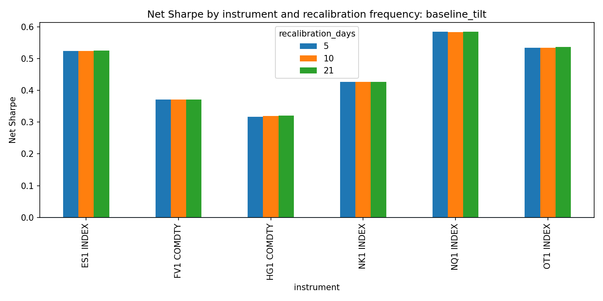
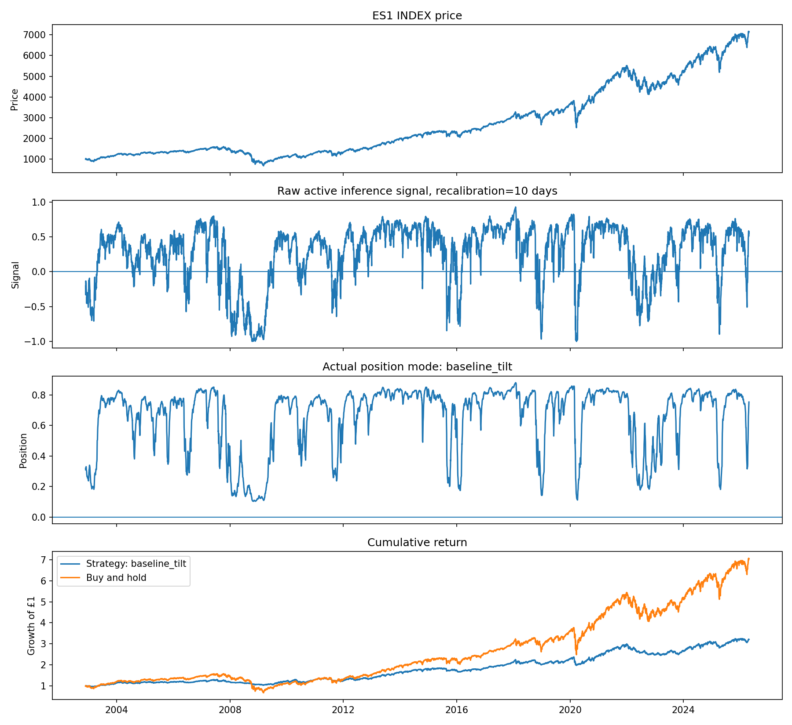
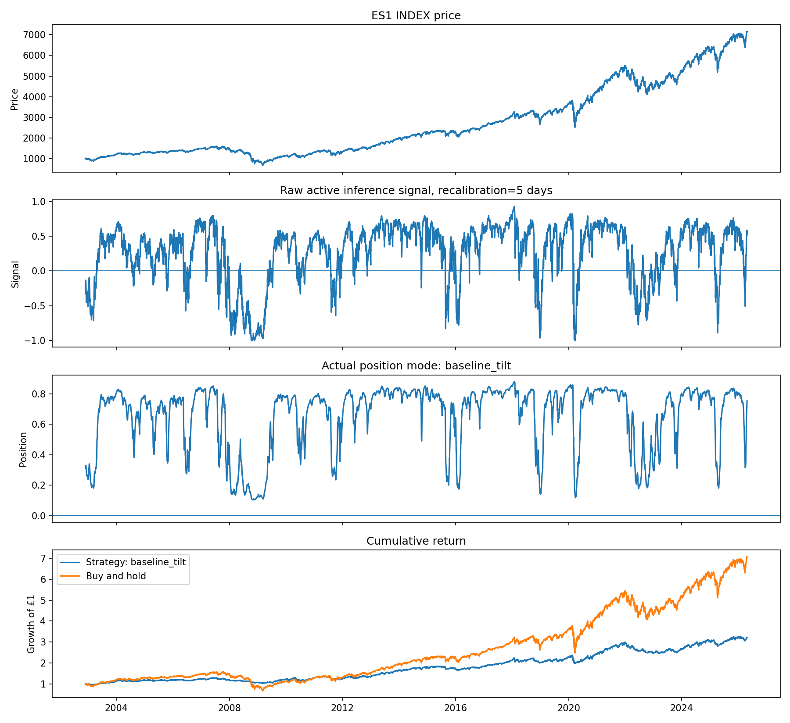

Active Inference as a Risk-Aware Trend Exposure Signal
A first-pass analysis of daily time series from 2000 onward, using a latent trend filter to estimate direction and confidence, then converting those beliefs into a smoothed exposure-scaling rule.
Executive summary
The current active inference model does not beat buy-and-hold on raw cumulative growth, but it improves Sharpe and reduces maximum drawdown across all six instruments. The best interpretation is that the active inference signal is working as a risk-aware exposure modulator rather than as a full replacement for an existing trend-following model.
Model formulation
The model treats daily returns as observations generated by a hidden latent trend. At each time point it maintains a posterior belief over that latent trend and its uncertainty. This gives a signed signal and a confidence estimate.
μ_t = μ_{t-1} + η_t
q(μ_t) = Normal(m_t, v_t)
The useful action layer is not a pure long/short allocation. It is a baseline-plus-tilt model, where active inference modulates exposure around a strategic baseline:
Here, a_t is the position, s_t is the signed active inference trend signal, and c_t is the model confidence. The position is then smoothed through time using an exponential smoothing parameter of 0.20.
Performance summary
Across the best recalibration setting for each instrument, the active inference exposure model improves Sharpe and drawdown in each case, while underperforming buy-and-hold on raw cumulative growth. This is expected because the strategy is not always fully invested.
| Instrument | Best recal. | AI net Sharpe | Buy-hold Sharpe | AI growth | Buy-hold growth | AI max DD | Buy-hold max DD |
|---|---|---|---|---|---|---|---|
| ES1 INDEX | 21 days | 0.525 | 0.439 | 3.21x | 7.06x | -20.3% | -57.6% |
| NQ1 INDEX | 21 days | 0.585 | 0.555 | 5.67x | 17.65x | -24.6% | -54.9% |
| OT1 INDEX | 21 days | 0.537 | 0.421 | 4.22x | 8.10x | -26.9% | -65.4% |
| NK1 INDEX | 5 days | 0.427 | 0.400 | 3.78x | 9.37x | -32.3% | -61.1% |
| FV1 COMDTY | 21 days | 0.371 | 0.288 | 1.25x | 1.30x | -7.2% | -18.1% |
| HG1 COMDTY | 21 days | 0.321 | 0.272 | 3.70x | 6.01x | -42.8% | -68.6% |
Figure 1. Net Sharpe across instruments

Figure 2. ES1 detailed example, 21-day recalibration
Recalibration sensitivity
The 5, 10 and 21 day recalibration settings produce very similar results. This suggests that, in this first version, performance is driven more by the latent trend estimate and action-layer smoothing than by frequent recalibration of the filter parameters.


Interpretation
The current model is best understood as a confidence and exposure-scaling layer. It is not yet a return-maximising strategy in raw cumulative terms. Buy-and-hold remains difficult to beat on growth because it is always fully invested during long bull markets, whereas the active inference strategy averages around 60–65% exposure.
The encouraging result is that the active inference posterior over latent trend and uncertainty seems to contain useful information about when to reduce exposure. This leads to improved Sharpe and substantially lower drawdowns across instruments.
Potential next steps
- Compare directly against other models, using the same instruments, dates, costs, and position constraints.
- Test active inference as an overlay on the existing trend signal, rather than as a standalone allocation model.
- Run a proper walk-forward optimisation of the action layer, so the baseline, tilt, smoothing, and confidence nonlinearity are selected only from past data.
- Evaluate regime attribution, especially whether the model reduces exposure during major buy-and-hold drawdowns.
- Explore growth-seeking variants, such as a buy-and-hold-plus-active-inference overlay with optional leverage, if the goal is to beat buy-and-hold on cumulative return.